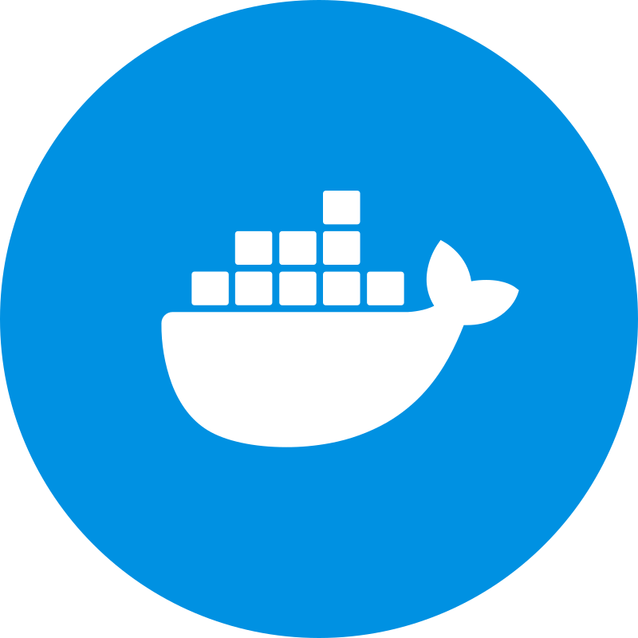

Expertise matérielle &
systèmes informatiques
Spécialiste de la maintenance préventive et curative, de l'administration système et de la virtualisation. Une approche méthodique pour garantir la fiabilité de vos équipements et la sérénité des utilisateurs.
Passionné de hardware, rigoureux dans la résolution de problèmes
Fort de deux années d'expérience pratique au sein de l'entreprise JLB Formatic, j'interviens sur la maintenance intégrale des parcs informatiques : du diagnostic micro-composants à la remise en service de postes professionnels, en passant par l'installation de serveurs et d'infrastructures virtualisées.
Ma philosophie repose sur la réactivité, le soin du détail et la clarté technique. Mon ambition est de proposer des prestations de support informatique et de réparation multimarques de haut niveau, alliant fiabilité technique et relation de confiance avec les utilisateurs.
Hardware de Pointe
Diagnostic panne, micro-soudures, changement de dalles et composants.
Systèmes & Serveurs
Windows Server, distributions Linux, configurations et sauvegardes.
Virtualisation & Stockage
Proxmox VE, conteneurs LXC/Docker, gestion NAS Synology.
Relation Utilisateur
Pédagogie, conseil personnalisé et accompagnement méthodique.
Domaines de Compétences
Un savoir-faire complet pour intervenir à tous les niveaux de l'écosystème informatique d'une entreprise ou d'un particulier.
Maintenance & Hardware
Diagnostic approfondi de pannes matérielles, assemblage personnalisé, remplacement d'écrans, batteries, cartes mères et optimisation thermique.
Systèmes & Administration
Déploiement et gestion d'environnements bureautiques et serveurs. Gestion d'accès, permissions, intégrité et maintenance applicative.
 Windows Server 2022
Windows Server 2022
 Linux Debian & Ubuntu
Active Directory
Scripts PowerShell & Bash
Linux Debian & Ubuntu
Active Directory
Scripts PowerShell & Bash
Virtualisation & Stockage
Mise en place de solutions de centralisation et de continuité d'activité. Gestion des plans de reprise (PRA) et stratégies de sauvegarde.

Docker & Conteneurs LXC Synology DSM
Stratégie Backup 3-2-1
Synology DSM
Stratégie Backup 3-2-1
Réseau & Supervision
Configuration de switchs, segmentation VLAN, routeurs, règles de pare-feu et monitoring centralisé de la santé du parc.
 TCP/IP & VLAN
Wazuh SIEM/XDR
VPN & Pare-feu
Supervision logs
TCP/IP & VLAN
Wazuh SIEM/XDR
VPN & Pare-feu
Supervision logs
Réalisations & Projets Majeurs
Études de cas réelles menées en entreprise pour concevoir et déployer des infrastructures pérennes.
Déploiement d'un Cluster Proxmox VE
Conception et mise en œuvre d'une plateforme de virtualisation d'entreprise sous Proxmox VE. Centralisation des services métier, optimisation de l'allocation des ressources hardware et garantie de haute disponibilité.
Supervision Centralisée Wazuh SIEM/XDR
Déploiement et intégration de la solution de supervision de sécurité Wazuh dans un conteneur dédié. Configuration d'agents sur parc hétérogène (Debian & Windows Server) pour l'analyse d'intégrité et la détection d'anomalies en temps réel.
Prendre Contact
Vous avez un projet, un besoin en maintenance informatique ou une opportunité professionnelle ? Échangeons !
Discutons de vos besoins
Disponible pour échanger sur vos problématiques de maintenance informatique, d'infrastructure ou pour intégrer votre équipe technique.